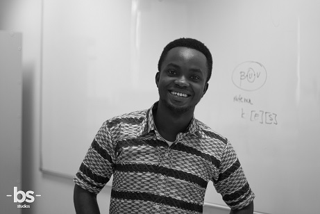

Emmanuel Nimo
P.O Box 762
Tel: +233247145596
emmanuel.nimo@ashesi.edu.gh
INTRODUCTION
Emmanuel Nimo is a senior at Ashesi University majoring in BSc in Computer Engineering. Born Ghanaian, he has strong interest in telecommunication technology and marketing because he believes the two would drive Africa's economy.
EDUCATION
- Ashesi University, 2015-2019
- Opoku Ware School, 2011- 2014
- Ridge School
ACHIEVEMENT/AWARDS
- Best Mentor 2017
- MLH Hackton Participant 2017
- Volunteer Title Award 2016
- MasterCard Scholar 2015
WORK EXPERIENCE
- Embedded System Intern at InventElectronics, Kumasi.
- Research & Design Intern at Burro Ghana, Koforidua.
- Computer Technician Assistant at MO Electronics & IT solution, Kumasi.
PROJECTS/RESEARCH
- Processed ECG heartbeat signals using Matlab
- Built a control system incubator for hatching eggs.
- Applied Python data structures to model airport baggage handling system that has efficient data organization
SKILLS
- Proficiency in Microsoft Suite: Word, Excel, PowerPoint, OneNote, Outlook, etc. and Google Docs.
- Intermediate knowledge in computer programming languages: Arduino, Python, C, Java, HTML, Mathlab
- Intermediate skills in basic design and entrepreneurship, project management, mentoring, 3D printing and modelling, public speaking and presentations.
- Intermediate knowledge in software such as Latex, Vivado, LT spice, SolidWorks, Fusion360 & Cura.
VOLUNTEER
- A volunteer for the MasterCard Scholar Service Day 2017 at the Patang Mental Hospital, Ghana
- Embarked on a two-week community service of teaching and mentoring pupils with TMAT at Ponwaakrom, a village in Sunyani
2018 All rights reserved.